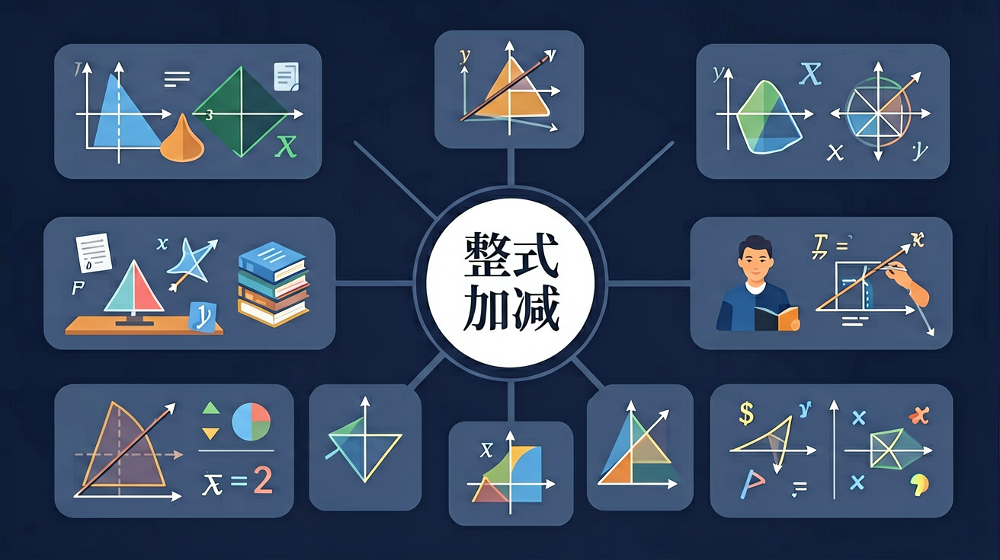

下列哪组是同类项？
计算-3a+2a的结果是？
在算术中，2苹果 + 3苹果 = 5苹果，但 2苹果 + 3橙子不能合并成5个同类水果。代数中的"同类项"就是这个道理。
当代数式中有很多项时，如何快速化简？比如 3x² + 2x − x² + 5x − 1 该如何处理？
把同类项的系数相加（利用分配律），这就是合并同类项。
合并同类项：把系数相加，字母和指数不变。
只有同类项才能合并，不同类的不能合并！
在整式加减中，经常遇到括号。括号前是正号还是负号，处理方式完全不同，稍不注意就会出错！
本质是分配律：−(3x − 2y + 1) = (−1)×(3x − 2y + 1)
整式加减的完整流程：①去括号 → ②找同类项 → ③合并同类项 → ④化简结果
处理括号，正号不变号，负号全变号
用下划线或括号标记出同类项（可用不同颜色区分）
系数相加，字母和指数不变
按次数从高到低排列各项
一个矩形花圃，长为(2x+3)米，宽为(x-1)米。另一个正方形花圃，边长为(x+2)米。两者周长之差是多少？